| Screenshot | Source Code and Description | Executable |
 | All examples in one package |
|
| 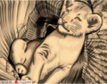 | lion.cpp
This is the first example I used to implement and debug the
scanline rasterizer, affine transformer, and basic renderers.
You can rotate and scale the “Lion” with the left mouse button.
Right mouse button adds “skewing” transformations, proportional
to the “X” coordinate. The image is drawn over the old one with
a cetrain opacity value. Change “Alpha” to draw funny looking
“lions”. Change window size to clear the window. |
|
| 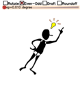 |
idea.cpp
The polygons for this “idea” were taken from the book
"Dynamic HTML in Action" by Eric Schurman. An example of using
Microsoft Direct Animation can be found here:  ideaDA.html.
If you use Microsoft Internet Explorer you can compare the quality
of rendering in AGG and Microsoft Direct Animation. Note that even
when you click "Rotate with High Quality", you will see it “jitters”.
It's because there are actually no Subpixel Accuracy used in the Microsoft Direct Animation.
In the AGG example, there's no jitter even in the “Draft” (low quality) mode.
You can see the simulated jittering if you turn on the “Roundoff” mode,
in which there integer pixel coordinated are used. As for the performance,
note, that the image in AGG is rotated with step of 0.01 degree (initially),
while in the Direct Animation Example the angle step is 0.1 degree. ideaDA.html.
If you use Microsoft Internet Explorer you can compare the quality
of rendering in AGG and Microsoft Direct Animation. Note that even
when you click "Rotate with High Quality", you will see it “jitters”.
It's because there are actually no Subpixel Accuracy used in the Microsoft Direct Animation.
In the AGG example, there's no jitter even in the “Draft” (low quality) mode.
You can see the simulated jittering if you turn on the “Roundoff” mode,
in which there integer pixel coordinated are used. As for the performance,
note, that the image in AGG is rotated with step of 0.01 degree (initially),
while in the Direct Animation Example the angle step is 0.1 degree. |
|
| 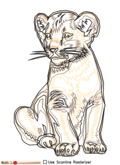 |
lion_outline.cpp
The example demonstrates my new algorithm of drawing Anti-Aliased
lines. The algorithm works about 2.5 times faster than the scanline
rasterizer but has some restrictions, particularly, line joins can
be only of the “miter” type, and when so called miter limit is
exceded, they are not as accurate as generated by the stroke
converter (conv_stroke). To see the difference, maximize the window
and try to rotate and scale the “lion” with and without using
the scanline rasterizer (a checkbox at the bottom). The difference
in performance is obvious. |
|
| 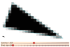 |
aa_demo.cpp
Demonstration of the Anti-Aliasing principle with Subpixel Accuracy. The triangle is
rendered two times, with its “natural” size (at the bottom-left)
and enlarged. To draw the enlarged version there is a special scanline
renderer was written (see class renderer_enlarged in the source code).
You can drag the whole triangle as well as each vertex of it. Also
change “Gamma” to see how it affects the quality of Anti-Aliasing. |
|
| 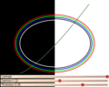 |
gamma_correction.cpp
Anti-Aliasing is very tricky because everything depends. Particularly,
having straight linear dependence “pixel coverage” →
“brightness” may be not the best.
It depends on the type of display (CRT, LCD), contrast,
black-on-white vs white-on-black, it even depends on your
personal vision. There are no linear dependencies in this World.
This example demonstrates the importance of so called Gamma
Correction in Anti-Aliasing. There a traditional power function is used,
in terms of C++ it's brighness = pow(brighness, gamma). Change
“Gamma” and see how the quality changes. Note, that if you improve
the quality on the white side, it becomes worse on the black side and
vice versa. |
|
| 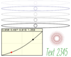 |
gamma_ctrl.cpp
This is another experiment with gamma correction.
See also Gamma Correction. I presumed that we can do better
than with a traditional power function. So, I created a
special control to have an arbitrary gamma function. The conclusion
is that we can really achieve a better visual result with this control,
but still, in practice, the traditional power function is good enough
too. |
|
| 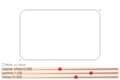 |
rounded_rect.cpp
Yet another example dedicated to Gamma Correction.
If you have a CRT monitor: The rectangle looks bad - the rounded corners are
thicker than its side lines. First try to drag the “subpixel offset”
control — it simply adds some fractional value to the coordinates. When dragging
you will see that the rectangle is "blinking". Then increase “Gamma”
to about 1.5. The result will look almost perfect — the visual thickness of
the rectangle remains the same. That's good, but turn the checkbox
“White on black” on — what do we see? Our rounded rectangle looks terrible.
Drag the “subpixel offset” slider — it's blinking as hell.
Now decrease "Gamma" to about 0.6. What do we see now? Perfect result!
If you use an LCD monitor, the good value of gamma will be closer to 1.0 in
both cases — black on white or white on black. There's no perfection in this
world, but at least you can control Gamma in Anti-Grain Geometry :-) |
|
| 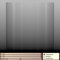 |
gamma_tuner.cpp
Yet another gamma tuner. Set gamma value with the slider, and then
try to tune your monitor so that the vertical strips would be
almost invisible. |
|
| 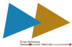 |
rasterizers.cpp
It's a very simple example that was written to compare the performance
between Anti-Aliased and regular polygon filling. It appears that the most
expensive operation is rendering of horizontal scanlines. So that,
we can use the very same rasterization algorithm to draw regular, aliased
polygons. Of course, it's possible to write a special version of the rasterizer
that will work faster, but won't calculate the pixel coverage values. But
on the other hand, the existing version of the rasterizer_scanline_aa allows
you to change gamma, and to "dilate" or "shrink" the polygons in range of ± 1
pixel. As usual, you can drag the triangles as well as the vertices of them.
Compare the performance with different shapes and opacity. |
|
| 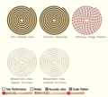 |
rasterizers2.cpp
More complex example demostrating different rasterizers. Here you can see how the
outline rasterizer works, and how to use an image as the line pattern. This
capability can be very useful to draw geographical maps. |
|
| 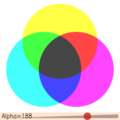 |
component_rendering.cpp
AGG has a gray-scale renderer that can use any 8-bit color channel of an
RGB or RGBA frame buffer. Most likely it will be used to draw gray-scale
images directly in the alpha-channel. |
|
|
polymorphic_renderer.cpp
There's nothing looking effective. AGG has renderers for different pixel formats
in memory, particularly, for different byte order (RGB or BGR).
But the renderers are class templates, where byte order is defined
at the compile time. It's done for the sake of performance and in most
cases it fits all your needs. Still, if you need to switch between
different pixel formats dynamically, you can write a simple polymorphic
class wrapper, like the one in this example. |
|
| 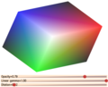 |
gouraud.cpp
Gouraud shading. It's a simple method of interpolating colors in a triangle.
There's no “cube” drawn, there're just 6 triangles.
You define a triangle and colors in its vertices. When rendering, the
colors will be linearly interpolated. But there's a problem that appears when
drawing adjacent triangles with Anti-Aliasing. Anti-Aliased polygons do not "dock" to
each other correctly, there visual artifacts at the edges appear. I call it
“the problem of adjacent edges”. AGG has a simple mechanism that allows you
to get rid of the artifacts, just dilating the polygons and/or changing
the gamma-correction value. But it's tricky, because the values depend
on the opacity of the polygons. In this example you can change the opacity,
the dilation value and gamma. Also you can drag the Red, Green and Blue
corners of the “cube”. |
|
| 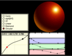 |
gradients.cpp
This “sphere” is rendered with color gradients only. Initially there was an idea
to compensate so called Mach Bands effect. To do so I added a gradient profile functor.
Then the concept was extended to set a color profile. As a result you can
render simple geometrical objects in 2D looking like 3D ones.
In this example you can construct your own color profile and select the gradient
function. There're not so many gradient functions in AGG, but you can easily
add your own. Also, drag the “gradient” with the left mouse button, scale and
rotate it with the right one. |
|
| 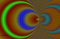 |
gradient_focal.cpp
This demo evolved from testing code and performance measurements.
In particular, it shows you how to calculate
the parameters of a radial gradient with a separate focal point, considering
arbitrary affine transformations. In this example window resizing
transformations are taken into account. It also demonstrates the use case
of gradient_lut and gamma correction. |
|
| 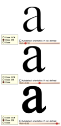 |
conv_contour.cpp
One of the converters in AGG is conv_contour. It allows you to
extend or shrink polygons. Initially, it was implemented to eliminate
the “problem of adjacent edges” in the SVG Viewer, but it can be
very useful in many other applications, for example, to change
the font weight on the fly. The trick here is that the sign (dilation
or shrinking) depends on the vertex order - clockwise or counterclockwise.
In the conv_contour you can control the behavior. Sometimes you need to
preserve the dilation regardless of the initial orientation, sometimes
it should depend on the orientation. The glyph ‘a’ has
a “hole” whose orientation differs from the main contour. To change
the “weight” correctly, you need to keep the orientation as it is
originally defined. If you turn “Autodetect orientation…” on,
the glyph will be extended or shrinked incorrectly. The radio buttons
control the orientation flad assigned to all polygons. “Close” doesn't
add the flag, “Close CW” and “Close CCW” add “clockwise” or
“counterclockwise” flag respectively. Note, that the actual order
of vertices remains the same, the flag is being added despite of the
real orientation. Try to play with it. |
|
| 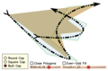 |
conv_dash_marker.cpp
The example demonstrates rather a complex pipeline that consists of
diffrerent converters, particularly, of the dash generator, marker
generator, and of course, the stroke converter. There is also a
converter that allows you to draw smooth curves based on polygons,
see Interpolation with Bezier Curves. You can drag the three vertices of
the “main” triangle. |
|
| 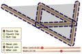 |
conv_stroke.cpp
Another example that demonstrates the power of the custom pipeline
concept. First, we calculate a thick outline (stroke), then generate
dashes, and then, calculate the outlines (strokes) of the dashes
again. Drag the verices as in the previous example. |
|
| 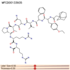 |
mol_view.cpp
This is rather a complex but effective example that renders
2D organic molecules from the popular MDL Molecule Format (SDF).
Press the left mouse button to rotate and scale the molecule,
and the right one to drag it. PageUp, PageDown keys switch
between the molecules in the file. Look at the performance,
and note, that the molecules are being drawn from scratch
every time you change anything.
A little note for chemists. There's no ring perception
is done, so that, the double bonds in rings are drawn
incorrectly, but understandable. Also note, that
even very complex molecules with macrocycles,
drawn in limited space still remain consistent
and recognizable. |
|
|
alpha_mask.cpp
Alpha-mask is a simple method of clipping and masking
polygons to a number of other arbitrary polygons. Alpha mask
is a buffer that is mixed to the scanline container and controls
the Anti-Aliasing values in it. It's not the perfect mechanism of clipping,
but it allows you not only to clip the polygons, but also to
change the opacity in certain areas, i.e., the clipping can be
translucent. Press and drag the left mouse button to scale and
rotate the “lion”, resize the window to grnerate new alpha-mask. |
|
| 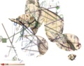 |
alpha_mask2.cpp
Another example of alpha-masking. In the previous example
the alpha-mask is applied to the scan line container with
unpacked data (scanline_u), while in this one there a special
adapter of a pixel format renderer is used (pixfmt_amask_adaptor).
It allows you to use the alpha-mask with all possible primitives
and renderers. Besides, if the alpha-mask buffer is of the same
size as the main rendering buffer (usually it is) we don't have
to perform clipping for the alpha-mask, because all the primitives
are already clipped at the higher level, see class amask_no_clip_u8.
Press and drag the left mouse button to scale and rotate the “lion”
and generate a new set of other primitives, change the “N”
value to generate a new set of masking ellipses. |
|
| 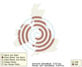 |
alpha_mask3.cpp
Yet another example of alpha-masking. It simulates arbitrary
polygon clipping similar to gpc_test.cpp. Alpha-Masking
allows you to perform only the Intersection (AND) and
Difference (SUB) operations, but works much faster that
conv_gpc. Actually, there're different compexities and
different dependencies. The performance of conv_gpc depends on
the number of vertices, while Alpha-Masking depends on the
area of the rendered polygons. Still, with typical screen
resolutions, Alpha-Masking works much faster than General Polygon Clipper.
Compare the timings between alpha_mask3.cpp and gpc_test.cpp. |
|
 |
circles.cpp
This example just demonstrates that AGG can be used in different
scatter plot apllications. There's a number of small circles drawn. You can
change the parameters of drawing, watching for the performance and
the number of circles simultaneously rendered. Press the left mouse button
to generate a new set of points. Press the right mouse
button to make the points randomly change their coordinates. Note, that
the circles are drawn with high quality, possibly translucent, and
with subpixel accuracy. |
|
| 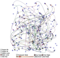 |
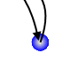
graph_test.cpp
Yet another example of the "general" kind. It was used mostly
to compare the performance of different steps of rendering in order
to see the weaknesses. The WIn GDI+ analog of it looks worse and
works slower. Try  (GDI_graph_test.zip) and compare it with
the AGG one. The most disappointing thing in GDI+ is that it
cannot draw Bezier curves correctly. Run the GDI+ example, choose
menu Image/Bezier curves, expand the window to about 1000x1000 pixels,
and then gradually change the size of the window. You will see that some
curves miss the destination points (the centers of the node circles).
That looks really ridiculous, so, I overcame my laziness and made an animated
GIF of 5 screenshots. (GDI_graph_test.zip) and compare it with
the AGG one. The most disappointing thing in GDI+ is that it
cannot draw Bezier curves correctly. Run the GDI+ example, choose
menu Image/Bezier curves, expand the window to about 1000x1000 pixels,
and then gradually change the size of the window. You will see that some
curves miss the destination points (the centers of the node circles).
That looks really ridiculous, so, I overcame my laziness and made an animated
GIF of 5 screenshots. |
|
| 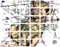 |
multi_clip.cpp
A testing example that demonstrates clipping to multiple rectangular
regions. It's a low-level (pixel) clipping that can be useful to
draw images clipped to a complex region with orthogonal boundaries.
It can be useful in some window interfaces that use a custom mechanism
to draw window content. The example uses all possible rendering
mechanisms. |
|
| 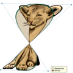 |
perspective.cpp
Perspective and bilinear transformations. In general,
these classes can transform an arbitrary quadrangle to another
arbitrary quadrangle (with some restrictions). The example
demonstrates how to transform a rectangle to a quadrangle defined
by 4 vertices. You can drag the 4 corners of the quadrangle, as well
as its boundaries. Note, that the perspective transformations don't
work correctly if the destination quadrangle is concave. Bilinear
thansformations give a different result, but remain valid with any
shape of the destination quadrangle. |
|
 |
simple_blur.cpp
The example demonstrates how to write custom span generators. This one
just applies the simplest “blur” filter 3x3 to a prerendered image.
It calculates the average value of 9 neighbor pixels.
Just press the left mouse button and drag. |
|
| 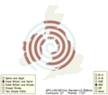 |
gpc_test.cpp
General Polygon Clipper by Alan Murta is the most reliable implementation of the polygon
boolean algebra. It implements Bala R. Vatti's algorithm of arbitrary
polygon clipping and allows you to calculate the Union, Intersection,
Difference, and Exclusive OR between two poly-polygons (i.e., polygonal
areas consisted of several contours). AGG has a simple wrapper class
that can be used in the coordinate conversion pipeline. The implementation
by Alan Murta has restrictions of using it in commercial software, so that,
please contact the author to settle the legal issues. The example
demonstrates the use of GPC. You can drag one polygon with the left
mouse button pressed. Note, that all operations are done in the vectorial
representation of the contours before rendering. |
|
| 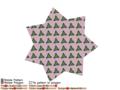 |
pattern_fill.cpp
The example demonstrates how to use arbitrary images as fill patterns.
This span generator is very simple, so, it doesn't allow you to apply
arbitrary transformations to the pattern, i.e., it cannot be used as a
texturing tool. But it works pretty fast and can be useful in some
applications. |
|
 |
raster_text.cpp
Classes that render raster text was added in AGG mostly
to prove the concept of the design. They can be used to
draw simple (aliased) raster text. The example demonstrates
how to use text as a custom scanline generator together
with any span generator (in this example it's gradient filling).
The font format is propriatory, but there are some predefined
fonts that are shown in the example. |
|
| 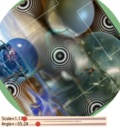 |
image1.cpp
This is the first example with the new "reincarnation" of the image
transformation algorithms. The example allows you to rotate and scale
the image with respect to its center. Also, the image is scaled
when resizing the window. |
|
| 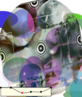 |
image_alpha.cpp
A very powerful feature that allows you to simulate the alpha-channel
on the basis of some functioon. In this example it's brightness, but
it can be of any complexity. In the example you can form the brightness
function and watch for the translucency. Resize the windows to move the
image over the backgraund. |
|
| 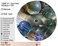 |
image_filters.cpp
The image transformer algorithm can work with different interpolation
filters, such as Bilinear, Bicubic, Sinc, Blackman. The example
demonstrates the difference in quality between different filters.
When switch the “Run Test” on, the image starts rotating. But
at each step there is the previously rotated image taken, so
the quality degrades. This degradation as well as the performance
depend on the type of the interpolation filter. |
|
| 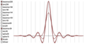 |
image_fltr_graph.cpp
Demonstration of the shapes of different interpolation filters. Just
in case if you are curious. |
|
| 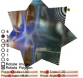 |
image_transforms.cpp
Affine transformations of the images. The examples demonstrates
how to construct the affine transformer matrix for different
cases. See the “readme!” file for details. Now there are
methods in trans_affine that allow you to construct transformations
from an arbitrary parallelogram to another parallelogram. It's very
convenient and easy. |
|
| 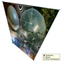 |
image_perspective.cpp
Image perspective transformations. There are two types of arbitrary
quadrangle transformations, Perspective and Bilinear. The image
transformer always uses reverse transformations, and there is a problem.
The Perspective transformations are perfectly reversible, so they
work correctly with images, but the Bilinear transformer behave
somehow strange. It can transform a rectangle to a quadrangle, but
not vice versa. In this example you can see this effect, when
the edges of the image "sag". I'd highly appreciate if someone
could help me with math for transformations similar to Bilinear ones,
but correctly reversible (i.e., that can transform an arbitrary quadrangle
to a rectangle). The bilinear transformations are simple, see
agg_trans_bilinear.h and agg_simul_eq.h |
|
| 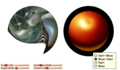 |
distortions.cpp
To transform an image as well as to define a color gradient you have
to write several declarations. This approach can seem difficult to handle
(compared with one function call), but it's very flexible. For example,
you can add an arbitrary distortion function. This mechanism is pretty much
the same in image transformers and color gradients. Try to play with this
example changing different parameters of the distortions. |
|
|
lion_lens.cpp
This example exhibits a non-linear transformer that “magnifies”
vertices that fall inside a circle and extends the rest (trans_warp_magnifier).
Non-linear transformations are tricky because straight lines become curves.
To achieve the correct result we need to divide long line segments into
short ones. The example also demonstrates the use of conv_segmentator that
does this division job.
Drag the center of the “lens” with the left mouse button and change
the “Scale” and “Radius”. The transformer can also shrink away
the image if the scaling value is less than 1. To watch for
an amazing effect, set the scale to the minimum (0.01), decrease
the radius to about 1 and drag the “lens”. You will see it behaves
like a black hole consuming space around it. Move the lens somewhere to the
side of the window and change the radius. It looks like changing the
event horizon of the “black hole”. There are some more screenshots
of the poor lion:
Sad Lion,
Cyclop Lion,
Lion in Trouble (being eaten by the black hole),
an animated GIF. |
|
| 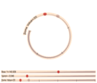 |
trans_polar.cpp
Another example of non-linear transformations requested by one of my friends.
Here we render a standard AGG control in its original form (the slider
in the bottom) and after the transformation. The transformer itself is not
a part of AGG and just demonstrates how to write custom transformers (class
trans_polar). Note that because the transformer is non-linear, we need to use
conv_segmentator first. Try to drag the value of the slider at the bottom
and watch how it's being synchronized in the polar coordinates. Also
change two other parameters (Spiral and Base Y) and the size of the window.
Don't worry much about the transformed_control class, it's just an
adaptor used to render the controls with additional transformations.
The use of trans_polar is quite standard:
agg::trans_polar tr;
agg::conv_transform<SomeVertexSource,
trans_polar> tp(some_source, tr);
|
|
| 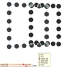 |
scanline_boolean.cpp
A new method to perform boolean operations on polygons (Union,
Intersection, XOR, and Difference). It uses the scanline
approach and in typical screen resolutions works much faster
(about 10 times) than vectorial algorithms like General Polygon Clipper. It
preserves perfect Anti-Aliasing and besides, can work with translucency.
There are two XOR operations, Linear XOR and
Saddle XOR. The only difference is in the formula
of XORing of the two cells with Anti-Aliasing. The first one is:
cover = a+b; if(cover > 1) cover = 2.0 - cover;
The second uses the classical “Saddle” formula:
cover = 1.0 - (1.0 - a + a*b) * (1.0 - b + a*b);
The Linear XOR produces
more correct intersections and works constistently with the
scanline rasterizer algorithm. The Saddle XOR works better
with semi-transparent polygons. |
|
 |
scanline_boolean2.cpp
This is another example of using of the scanline boolean algebra.
The example is similar to Demo gpc_test.cpp. Note that the cost
of the boolean operation with Anti-Aliasing is comparable with rendering
(the rasterization time is not included). Also note that there is
a difference in timings between using of scanline_u and
scanline_p. Most often scanline_u works faster, but it's
because of much less number of produced spans. Actually, when using
the scanline_u the complexity of the algorithm becomes proportional
to the area of the polygons, while in scanline_p it's
proportional to the perimeter. Of course, the binary variant
works much faster than the Anti-Aliased one. |
|
| 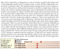 |
freetype_test.cpp
This example demonstrates the use of the FreeType font engine with cache.
Cache can keep three types of data, vector path, Anti-Aliased
scanline shape, and monochrome scanline shape. In case of caching
scanline shapes the speed is pretty good and comparable with
Windows hardware accelerated font rendering. |
|
|
truetype_test.cpp
The same as the above, but with using Win32 API as the
font engine (GetGlyphOutline()). |
|
| 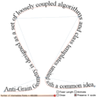 |
trans_curve1.cpp
This is a "kinda-cool-stuff" demo that performs non-linear
transformations and draws vector text along a curve.
Note that it's not just calculating of the glyph angles
and positions, they are transformed as if they were elastic.
The curve
is calculated as a bicubic spline. The option "Preserve X scale"
makes the converter distribute all the points uniformly along
the curve. If it's unchechked, the scale will be proportional
to the distance between the control points. |
|
 |
trans_curve2.cpp
Similar to the previous demo, but here the transformer operates
with two arbitrary curves. It requires more calculations, but gives
you more freedom. In other words you will see :-). |
|
| 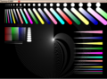 |
aa_test.cpp
A test of Anti-Aliasing the same as in
http://homepage.mac.com/arekkusu/bugs/invariance
The performance of AGG on a typical P-IV 2GHz is:
Points: 37.46K/sec, Lines: 5.04K/sec, Triangles: 7.43K/sec |
|
| 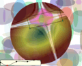 |
alpha_gradient.cpp
The demo shows how to combine any span generator with alpha-channel gradient. |
|
| 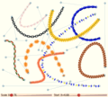 |
line_patterns.cpp
The demo shows a very powerful mechanism of using arbitrary images as line patterns.
The main point of it is that the images are drawn along the path. It allows you
to draw very fancy looking lines quite easily and very useful in GIS/cartography
applications. There the bilinear filtering is used, but it's also possible
to add any other filtering methods, or just use the nearest neighbour one for the
sake of speed.
Before running this demo make sure that you have files 1.bmp…9.bmp for Win32,
MacOS, AmigaOS, and SDL platforms and 1.ppm…9.ppm for X11.
In the demo you can drag the control points of the curves and observe that the images are
transformed quite consistently and smoothly. You can also try to replace the image files
(1…9) with your own. The BMP files must have 24bit colors (TrueColor), the PPM ones
must be of type "P6". Also, the heigh should not exceed 64 pixels, and the background
should be white or very close to white. Actually, the algorithm uses 32bit images
with alpha channel, but in this demo alpha is simulated in such a way that wite
is transparent, black is opaque. The intermediate colors have intermediate opacity
that is defined by the brightness_to_alpha array. |
|
| 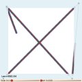 |
line_patterns_clip.cpp
Demonstrates the mechanism of clipping the polylines and/or polygons
with image patterns. Shows that the clipper maintains correct pattern
repetition along the line, considering clipped parts. |
|
 |
pattern_perspective.cpp
Pattern perspective transformations. Essentially it's
the same as Demo image_perspective.cpp, but working with a repeating pattern.
Can be used for texturing. |
|
| 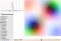 |
image_filters2.cpp
Another example that demonstrates the difference of image filters. It just
displays a simple 4x4 pixels image with huge zoom. You can see how different
filters affect the result. Also see how gamma correction works. |
|
| 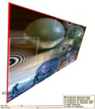 |
image_resample.cpp
The demonstration of image transformations with resampling. You can
see the difference in quality between regular image transformers and
the ones with resampling. Of course, image tranformations with resampling
work slower because they provide the best possible quality. |
|
| 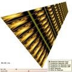 |
image_resample.cpp
The demonstration of pattern transformations with resampling. The same as
the above but with texturing patterns. |
|
| 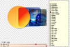 |
compositing.cpp
Extended compositing modes fully compatible with
SVG 1.2 |
|
| 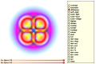 |
compositing2.cpp
Another demo example with extended compositing modes. |
|
| 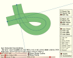 |
bezier_div.cpp
Demonstration of new methods of Bezier curve approximation. You can compare
the old, incremental method with adaptive De Casteljau's subdivion. The
new method uses two criteria to stop subdivision: estimation of distance and
estimation of angle. It gives us perfectly smooth result even for very sharp
turns and loops. |
|
 |
flash_rasterizer.cpp
Demonstration of Flash compound shape rasterizer. The rasterizer
accepts vectorial data in a form of Flash paths, that is, with two
fill styles, fill on the left and fill on the right of the path.
Then it produces a number of scanlines with corresponding styles
and requests for the colors and/or gradients, images, etc. The
algorithm takes care of anti-aliasing and perfect stitching
between fill areas. |
|
| 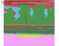 |
flash_rasterizer2.cpp
Another possible way to render Flash compound shapes. The idea behind
it is prety simple. You just use the regular rasterizer, but in a
mode when it doesn't automatically close the contours. Every compound
shape is decomposed into a number of single shapes that are rasterized
and rendered separately. |
|
 |
gouraud_mesh.cpp
Yet another example that demonstrates the power of compound shape rasterization.
Here we create a mesh of triangles and render them in one pass with multiple
Gouraud shaders (span_gouraud_rgba). The example demonstrates perfect
Anti-Aliasing and perfect triangle stitching (seamless edges) at the same time. |
|
| 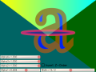 |
rasterizer_compound.cpp
This simple example demonstrates a rather advanced technique of using
the compound rasterizer. The idea is you assign styles to the polygons
(left=style, right=-1) and rasterize this "multi-styled" compound shape
as a whole. If the polygons in the shape overlap, the greater styles have
higher priority. That is, the result is as if greater styles were painted
last, but the geometry is flattened before rendering. It means there are
no pixels will be painted twice. Then the style are associated with colors,
gradients, images, etc. in a special style handler. It simulates
Constructive Solid Geometry so that, you can, for example draw a translucent
fill plus translucent stroke without the overlapped part of the fill being
visible through the stroke. |
|
| 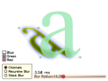 |
blur.cpp
Now you can blur rendered images rather fast! There two algorithms
are used: Stack Blur by Mario Klingemann and Fast Recursive Gaussian Filter, described
here
and here (PDF). The speed of both methods does not depend on the filter radius.
Mario's method works 3-5 times faster; it doesn't produce exactly Gaussian
response, but pretty fair for most practical purposes. The recursive filter
uses floating point arithmetic and works slower. But it is true Gaussian filter,
with theoretically infinite impulse response. The radius (actually 2*sigma value)
can be fractional and the filter produces quite adequate result. |
|


 Sad Lion,
Sad Lion,
 Cyclop Lion,
Cyclop Lion,
 Lion in Trouble (being eaten by the black hole),
an animated GIF.
Lion in Trouble (being eaten by the black hole),
an animated GIF.


 (../spheres.bmp)
(../spheres.bmp){kind=link}
{kind=link}
{kind=link}
{kind=link}
{kind=link}
{kind=link}
{kind=link}
{kind=link}
{kind=link}
{kind=link}
{kind=link}
{kind=link}
{kind=link}
{kind=link}
{kind=link}
{kind=link}
{kind=link}
{kind=link}
{kind=link}
{kind=link}
{kind=link}
{kind=link}
{kind=link}
{kind=link}
{kind=link}
{kind=link}
{kind=link}
{kind=link}
{kind=link}
{kind=link}
{kind=link}
{kind=link}
{kind=link}
{kind=link}
{kind=link}
{kind=link}
{kind=link}
{kind=link}
{kind=link}
{kind=link}
{kind=link}
{kind=link}
{kind=link}
{kind=link}
{kind=link}
{kind=link}
{kind=link}
{kind=link}
{kind=link}
{kind=link}
{kind=link}
{kind=link}